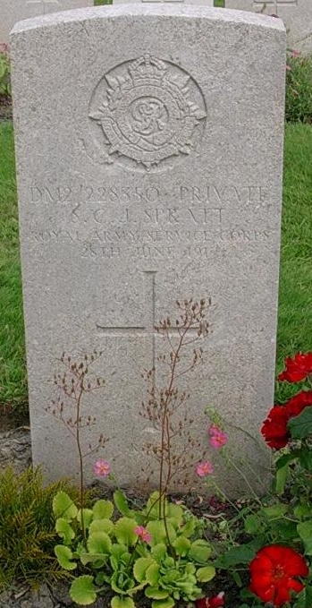
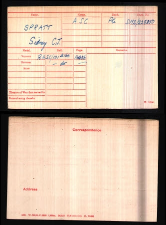
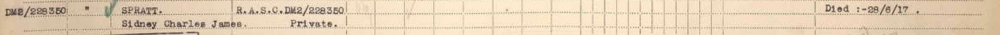
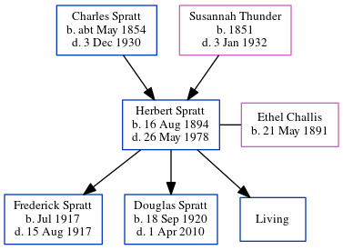

Sidney Charles James Spratt cAug 1882 - 1917
[ Home ] | [ Calendar ] | [ Surnames Index ] | [ Errors ] | [ Family History ]A smack owners's assistant and the child of Charles Spratt (a smack owner and fish salesman) and Susannah Thunder, Sidney Spratt, the first cousin twice-removed on the father's side of Nigel Horne, was born in Ramsgate, Kent, England c. Aug 18821,2. He was married to Mary A. On 31 Mar 1901, he was living at 44 Addington Street in Ramsgate1.
He died on 28 Jun 1917 in Flanders, Belgium3,4,5 (died of wounds) and was buried at Lijssenthoek Military Cemetery, Poperinge, Arrondissement Ieper, West Flanders, Belgium after 28 Jun 19176.
Parents
- Charles was born c. May 1854
- Susannah was born in 1851
Citations
- 1901 England, Wales & Scotland Census - Findmypast (was age 18 and the son of the head of the household)
- England & Wales births 1837-2006 - Findmypast
- Commonwealth War Graves Commission Debt Of Honour - Findmypast
- Lives Of The First World War 1914-1918 - Findmypast
- Soldiers Died In The Great War 1914-1919 - Findmypast
- Find A Grave http://www.findagrave.com
Media
Sidney Spratt - headstone

Sidney Spratt - soldiers effects

Thanet Advertiser 30 Nov 1918

Sidney Charles James Spratt - medal card

Sidney Charles James Spratt WWI Service Awards

Soldiers died in the Great War 1914-1919 Transcription - GBM-WWISD-0182345
Medal Index Cards Transcription - GBM-MCI-4217179
GRO WAR DEATHS ARMY OTHER RANKS (1914 to1921) Transcription - BMD-OVS-ARR1-003437-015
1891 England, Wales & Scotland Census Transcription - GBC-1891-0005762814
1901 England, Wales & Scotland Census Transcription - GBC-1901-0007443348
Commonwealth War Graves Commission Debt Of Honour Transcription - GBM-CWGC-ROLLOFHONOUR-000906683
War Memorials Register - GBM/IWM-MEMO/0016990
Family Tree
Map
Generated by ged2site. Last updated on Jul 3, 2024
Known Issues
Adding date of burial as 'aft 28 Jun 1917'